AFL-Unicorn模式学习笔记
AFL-选项及含义
这个是一部分AFL源码，指示了AFL键入选项的含义：
1 | /* Display usage hints. */ |
Unicorn Mode介绍
以下内容来自于源文件中关于 unicorn_mode 中的 README 文件：
1.介绍
此目录中的代码允许您构建利用Unicorn引擎的独立功能，并允许调用方获取黑盒、封闭源代码二进制代码段的检测输出。然后，afl-fuzz可以使用此机制对不能使用afl-gcc构建、不能在QEMU模式下使用或不能使用TriforceAFL等其他扩展的目标进行压力测试。
与原生AFL相比，性能损失很大，但至少我们能够在这些二进制文件上使用AFL，对吗？
这个想法和大部分实现来自Nathan Voss njvoss299@gmail.com。
2.怎么使用
构建AFL的Unicorn模式
首先，像往常一样建立afl。这很简单：
1 | cd <afl_root> |
成功完成后，您需要构建并添加 Unicorn Mode 功能：
1 | cd unicorn_mode |
注意：此脚本从Unicorn github页面下载最新的Unicorn Engine稳定版本。如果您是离线的，您需要稍微修改一下这个脚本，并提供您自己的Unicorn最新稳定版本的副本。这并不难，只需查看build_unicorn_support. sh脚本的开头并根据需要进行调整。
构建独角兽将需要一点时间（~5-10分钟）。完成后，它会自动编译一个示例应用程序并验证它是否正常工作。
使用Unicorn模式进行模糊测试
要真正有效地使用独角兽模式，您需要准备以下内容：
- 待fuzz的相关二进制码
- 内存映射和良好的启动状态的情报（memory map and good starting state）
- 包含用于启动模糊处理的示例输入的文件夹
- 构造的想法与任何其他AFL输入内容相同
- 结果的质量/速度将在很大程度上取决于起始样品的质量
- 参见AFL关于如何创建样本语料库的指导
- 基于Unicorn的测试线束 Unicorn-based test harness which:
- 添加内存映射区域
- 将二进制代码加载到内存
- 至少模拟一条指令 *
- 是啊，这个描述很模糊。有关更多详细信息，请参见下面的“Gotchas（陷阱）”部分
- 从命令行指定的文件加载并验证要fuzz的数据
- AFL将通过更改传递给测试工具的文件来提供变异输入
- 假定要模糊化的数据位于固定的缓冲器地址
- 如果输入约束(大小、无效的字节,等等)是已知的，应该在文件加载后对其进行检查。如果一个约束失败（错误了）,退出测试工具。AFL将输入为“uninteresting”,继续前进。
- 设置寄存器和内存状态（memory state）以开始测试
- 从头到尾模拟 interested 的代码
- 如果检测到crash，测试线束必须通过发出信号（SIGSEGV、SIGKILL、SIGABORT等）来产生“crash”
一旦你准备好了所有这些东西，你只需要在’unicorn-mode’下通过传递’-U’标志来运行afl-fuzz：
1 | afl-fuzz -U -m none -i /path/to/inputs -o /path/to/results -- ./test_harness @@ |
普通的afl-fuzz命令行格式适用于这里的所有内容。有关如何有效使用afl-fuzz的更多信息，请参考AFL的主要文档。
要更清楚地了解所有这些内容，请参考’unicorn_mode/samples’目录中提供的示例。还有一篇博客文章介绍了基本知识，网址是：
https://medium.com/@njvoss299/afl-unicorn-fuzzing-arbitrary-binary-code-563ca28936bf
‘helper_scripts’目录还包含几个helper脚本，它们允许您从正在运行的进程转储上下文、加载上下文以及hook堆分配。关于如何使用这个的细节，请查看上面链接的后续博客文章。
3. Gotchas, feedback, bugs
为了确保AFL的fork服务器正确启动，Unicorn的test harness脚本必须在加载“将从输入文件中参与fuzz的”数据前之前模拟至少一条指令。指令是什么并不重要，也不重要它是否有效。这是fork-server启动方式的产物，可以通过巧妙地重新安排应用于Unicorn的补丁来修复。
运行构建脚本将构建Unicorn及其python绑定，并将它们安装到您的系统上。此安装将用修补的afl-unicorn版本取代任何现有的Unicorn安装。
有关如何正确执行此操作的示例，请参阅unicorn_mode/samples/arm_example/arm_tester. c！如果你没有得到这个权利，AFL将不会加载任何变异的输入并且你的fuzz将是无用的！
Unicorn Mode简例
本部分内容出自：https://medium.com/hackernoon/afl-unicorn-fuzzing-arbitrary-binary-code-563ca28936bf
Unicorn 模式的工作原理是将 AFL 的 QEMU 模式通常在 Unicorn 引擎中执行的块边缘检测。基本上，AFL 将使用来自任何模拟代码片段的块覆盖信息来驱动其输入生成。整个想法围绕着正确构建基于 Unicorn 的测试工具，如下图所示：

基于 Unicorn 的测试工具加载目标代码，设置初始状态，并从磁盘加载 AFL 变异的数据。然后测试工具模拟目标二进制代码，如果它检测到发生崩溃或错误，它会抛出一个信号。AFL 会做所有正常的事情，但它实际上是在模糊模拟目标二进制代码！
Unicorn 模式应该可以按预期与使用任何标准 Unicorn 绑定（C/Python/Go/Whatever）编写的 Unicorn 脚本或应用程序一起工作，只要在一天结束时测试工具使用从修补程序编译的 libunicorn.so由 afl-unicorn 创建的独角兽引擎源代码。到目前为止，我只使用 Python 对此进行了测试，因此如果您对此进行了测试，请向存储库提供反馈和/或补丁。
请注意，构建 afl-unicorn 将在您的本地系统上编译并安装 Unicorn Engine v1.0.1 的补丁版本。在构建 afl-unicorn 之前，您必须卸载任何现有的 Unicorn 二进制文件。与现成的 AFL 一样，afl-unicorn 仅支持 Linux。我只在 Ubuntu 16.04 LTS 上测试过它，但它应该可以在任何能够同时运行 AFL 和 Unicorn 的操作系统上顺利运行。
使用示例
注意：这与 repo 中包含的“简单示例”相同。请在您自己的系统上试用它以查看它的实际效果。该存储库包含 main() 的预构建 MIPS 二进制文件，在此处进行了演示。\
首先，让我们看一下我们将进行模糊测试的代码。这只是一个人为设计的玩具示例，它很容易以几种不同的方式崩溃，但我已将其扩展到现实世界的用例中，并且它完全按预期工作。
1 | /* |
请注意，这段代码本身完全是伪造的。它假定“data_buf”的数据神奇地位于地址 0x00300000。虽然这看起来很奇怪，但这类似于许多解析函数，它们假设它们将在固定地址的缓冲区中找到数据。
在现实世界中，您需要对目标二进制文件进行逆向工程，以查找和识别您想要模拟和模糊测试的确切功能。在即将发布的博客文章中，我将介绍一些工具来简化进程状态的提取和加载，但现在您需要完成在 Unicorn 中启动和运行所有必需组件的基本工作。
您的测试工具必须通过命令行上指定的文件接受输入以进行变异。这是允许 AFL 通过其正常界面改变输入的粘合剂。如果测试工具在仿真期间检测到崩溃情况，例如如果 emu_start() 抛出异常，则它还必须强制自身崩溃。下面是执行这两项操作的示例测试工具：
1 | """ |
创建一些测试输入并自行运行测试工具，以验证它是否按预期模拟代码（并崩溃）。
现在测试工具已经启动并运行，创建一些示例输入并在 afl-fuzz 下运行它，如下所示。确保添加“-U”参数以指定独角兽模式，我建议将内存限制参数（“-m”）设置为“无”，因为运行独角兽脚本会占用相当多的内存。遵循正常的 AFL 约定，将包含要模糊测试的文件路径的参数替换为“@@”（有关更多信息，请参阅 AFL 的自述文件）
1 | afl-fuzz -U -m none -i /path/to/sample/inputs -o /path/to/results |
如果一切按计划进行，AFL 将启动并很快发现一些崩溃。

然后，您可以通过测试工具手动运行崩溃输入（位于 results/crashes/ 目录中），以详细了解它们崩溃的原因。我建议保留您的 Unicorn 测试工具的第二个副本，并根据需要进行修改以调试仿真中的崩溃。例如，您可以打开指令跟踪、使用Capstone一路反汇编、在关键点转储寄存器等。
一旦你认为你有一个有效的崩溃，你就需要找出一种方法将它传递给仿真之外的实际程序，并验证崩溃是否在物理系统上起作用。
值得注意的是，整体模糊测试速度和性能将在很大程度上取决于您的测试工具的速度。一个大型的、复杂的基于 Python 的测试工具将比一个紧凑的、优化的基于 C 的测试工具运行得慢得多。如果您计划运行广泛的、长时间运行的模糊器，请务必考虑这一点。作为粗略的参考，我发现基于 C 的线束每秒执行次数比类似的 Python 线束多 5-10 倍。
Unicorn Mode详述
在我之前的文章中展示的独角兽模式在表面上并不过分有用。它有很多限制，使得它在大多数现实世界的情况下使用起来笨拙且缓慢。例如，如果您要模拟的二进制文件调用一个可能调用内核的导入库函数（例如malloc()或printf() ）怎么办？如果您想要模糊测试的代码是高度有状态的，并且需要大量直到运行时才知道的内存区域（堆分配、堆栈指针、全局变量等）怎么办？事实上，我发现它唯一直接的用途是使用调试器从固件中恢复的平面嵌入式运行时系统内存快照。
本文介绍了我和我的同事Parker Wiksell为将 afl-unicorn 应用于 Windows、Linux、Android 和 iOS 应用程序而开发的一些新工具和技术。
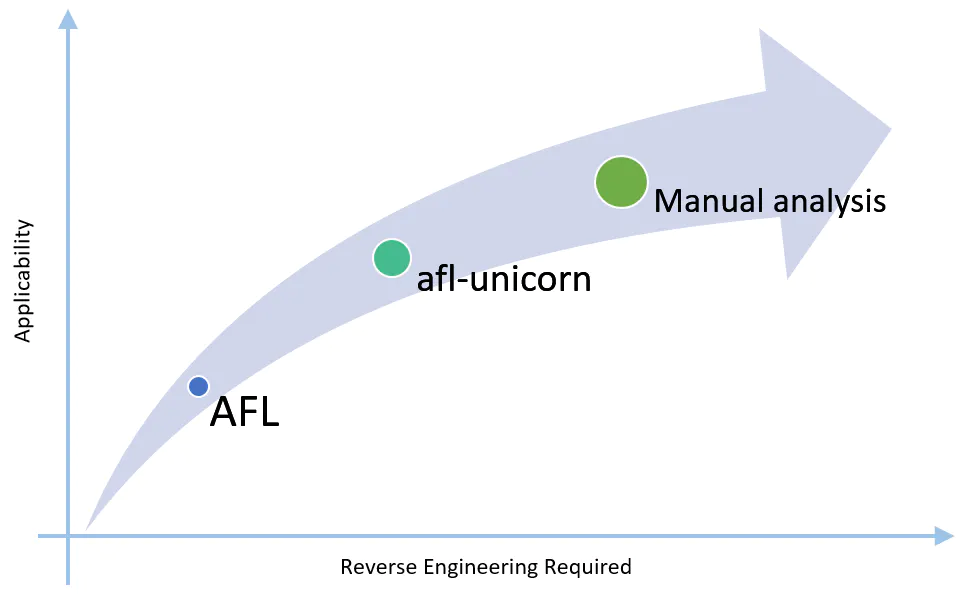
虽然没有什么比手动静态和动态分析更彻底和适用的了，但 afl-unicorn 可以让您进行一些逆向工程，以在通常无法使用的地方获得 AFL 的所有好处。
Afl-unicorn 弥合了完全手动研究（即阅读反汇编/源代码）的彻底性和 AFL 无与伦比的易用性之间的差距。通过一些逆向工程和设置时间，afl-unicorn 可以让您利用 AFL 的强大功能快速发现您已知可疑的代码部分中的漏洞，并基本了解它们的作用。
也许你会问自己，“如果我需要做一堆逆向工程，我为什么还要花时间让 afl-unicorn 启动并运行”？就我而言，这是一个简单的决定：我认为自己是一个相当不错的逆向工程师，但我不相信自己有能力发现我正在逆向的代码中的所有漏洞。我发现自己在过去遗漏了越界内存访问、整数溢出等问题，因此我宁愿依靠 AFL 的变异引擎来为我寻找错误。此外，如果您要走手动分析的道路，无论如何您都将进行 RE 跑腿工作，因此花一两天时间启动 afl-unicorn，然后让它在后台运行，同时您不断筛选代码提供奖金，低成本保险。
一般工作流程
虽然最初的博客文章描述了 afl-unicorn 工作原理背后的基本机制并提供了一个玩具示例，但这篇文章旨在提供一种更真实的方式来针对在操作系统（例如 Windows、Linux）上运行的应用程序使用它、Android 或 iOS）。实际上，您真的很想了解 afl-unicorn 的作用并使其适应您的特定问题，以确保您不会得到（或知道如何识别）误报和漏报。
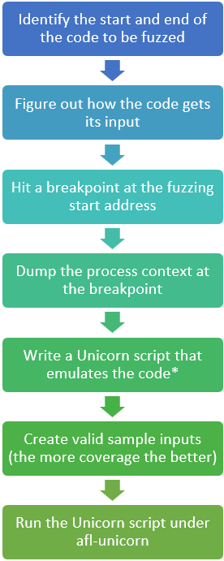
标识要fuzz的代码的起始和终结位置->探究代码如何获取其输入->在fuzz开始地址设置一个断点->在断点处转储进程上下文->编写模拟代码的Unicorn脚本->创建有效的sample输入->在afl-unicorn下运行Unicorn脚本
*创建与 afl-unicorn 一起使用的 Unicorn 脚本有一些特殊的细微差别。这些在下面更详细地描述。
第一项任务是对有关要模糊测试的代码的一些基本知识进行逆向工程。这包括确定一个好的起点和终点，以及该代码如何接收您要改变的输入。
假设您确定了网络数据包的顶级解析函数。该函数是否将数据包从线路中取出作为参数？它是如何传递到函数中的？最有可能的是，这将通过全局分配的缓冲区、堆栈上的指针或寄存器中的指针来实现。
您还需要弄清楚（尽您所能）输入有哪些限制。例如，最大尺寸是多少？是否有任何无效字符？确保在所选起始地址的上下文中考虑这一点，因为这些约束会随着时间的推移而改变，因为代码会在整个输入处理过程中过滤掉无效输入并分配各种大小的缓冲区。
完成所有研究后，您将希望在处理有效输入时捕获起始地址处的流程快照。我们通过创建一系列“Unicorn Context Dumper”脚本来实现这一点，当在起始地址的调试器断点处运行时，将整个进程内存、寄存器值和体系结构信息保存到“上下文目录”中磁盘。
现在您需要编写一个 Unicorn 脚本来加载您转储的进程上下文，加载输入以使用从磁盘文件读取的数据进行模糊处理，并模拟从开始地址到结束地址。如果在仿真过程中检测到任何错误或崩溃，此脚本必须强制自身崩溃，以便 AFL 能够检测到它。我们已经创建了一组我们称之为“Unicorn Loader”模块的辅助实用程序，它使大多数这些任务变得容易。“Unicorn Loader”还包括一个完整的替代堆管理器，可用于防止在模拟典型操作系统应用程序时发生的模拟错误……稍后会详细介绍。
一旦您的 Unicorn 测试工具脚本可以成功模拟从开始地址到结束地址（并执行上面提到的所有其他操作），就该创建一些有效的、不会崩溃的示例输入并按照 afl-unicorn 中的描述运行它第一篇博文。运气好的话，您会发现路径并希望出现一些崩溃！
具体示例：CGC 的 FSK_Messaging_Service
示例目标应用程序的描述
Trail of Bits 最近发布了cb-multios，其中包含来自 DARPA 的Cyber Grand Challenge的挑战以及额外的支持库，使它们易于在 Linux 上编译和运行。在此示例中，我将演示如何使用 afl-unicorn 来模糊测试其中一项挑战的解析功能，该挑战是专门设计为难以模糊测试的，FSK_Messaging_Service：
[…] 一种实现分组无线电接收器的服务，包括 FSK 解调前端、分组解码、处理，最后将其解析为简单的消息服务。
FSK_Messaging_Service 挑战专门设计用于挑战模糊测试。虽然潜在的漏洞相当简单，但在对模拟模拟 RF 输入进行大量解析和解调后，这些漏洞仍然存在。此外，数据本身附加了一个简单的 16 位校验和，必须在执行完整解析之前对其进行验证。从挑战的描述：
这个 [challenge binary] 向计算机推理系统提出了许多挑战。难点在于将输入集转换为射频前端后的处理数据。由于其本质，模糊测试将是无效的，因为射频接收器自然会受到噪声的影响，并且特别适合在存在噪声的情况下识别信号[…]因此，这个[挑战]被主观认为是困难的，旨在测试超越状态最先进的输入推理能力和求解器。
下图显示了 FSK_Messaging_Service 应用程序的整体逻辑和数据流：
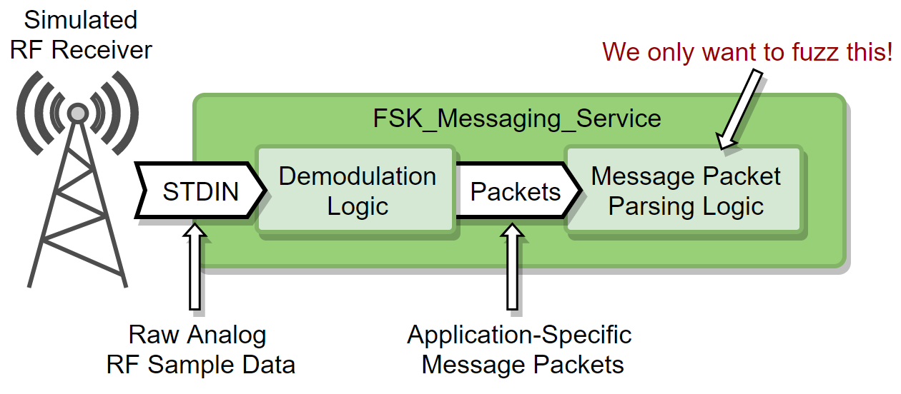
传统的模糊器（包括 AFL）永远无法通过解调逻辑。Afl-unicorn 让您可以直接将您认为最有可能易受攻击的代码作为目标。
找到我们需要模拟和模糊测试目标代码的内容
好的。所以我们不能对前门界面进行模糊测试，但是通过对代码进行一些分析（或者如果我们没有源代码则进行反汇编）很容易找到直觉告诉我们最有可能拥有的功能错误：在packet.c中找到cgc_receive_packet()。这个函数相当简单，并执行以下操作：
- 验证数据包缓冲区不为空且其长度大于 0
- 通过计算和比较 16 位 CRC 来验证数据包内容
- 循环数据包类型，如果匹配则调用cgc_add_new_packet()
- 如果找到有效的数据包类型，cgc_add_new_packet()实例化一个tSinglePacketData结构并从数据包中复制信息
这是源代码中的一些经过稍微修改的片段集合，显示了相关部分：
当然，实际上您很可能没有可用的源代码。相反，您必须使用传统的逆向工程方法（静态和动态分析）来了解有关目标应用程序的所有必要信息。
所以现在我们有了我们的模糊测试目标和输入是如何给出的知识：
- 我们想从cgc_receive_packet()函数中进行模糊测试
- 输入以 3 个参数的形式传递到函数中：指向数据包数据的指针 ( uint8_t \pData )、相应的长度 ( uint8_t dataLen ) 和数据的校验和 ( uint16_t packetCRC* )
我们还知道对输入的一个简单约束：
- 最大数据长度为 256 字节，因为dataLen是一个 8 位值
转储有效的运行进程上下文
现在我们想要在调用此函数时获取整个进程内存的快照，以使仿真尽可能简单。与更简单的方法（例如ripr或uEmu提供的就地仿真）相比，这看起来像是一种粗暴的方法，它解决了很多问题。例如，全局列表cgc_g_packetHandlers在运行时填充，因此除非我们有其内存位置的运行时状态，否则迭代cgc_packet_receive()中的处理程序的 for 循环将在仿真期间失败。
使用“Unicorn Context Dumper”脚本转储整个进程内存状态和寄存器上下文。我们已经创建了几个不同的版本来支持不同的调试器，包括 IDA Pro（目前版本 7 之前）、LLDB 和带有 GEF 的 GDB。目前只有IDA 版本可用，但其余版本（以及为其他调试器创建的任何其他版本）将在准备就绪后立即推送到 GitHub。只需将 IDA Pro 的调试器附加到正在运行的 FSK_Message_Service 进程，在模糊测试起始地址处设置断点，然后通过 IDA 运行脚本（文件->脚本文件…）。请注意，我只使用 IDA 的内置远程调试服务器对此进行了测试。附加到其他调试器可能会以不同方式显示内存段，这可能会导致错误。
我选择在调用cgc_packet_receive()之前设置我的起始地址，参数方便地全部在寄存器中而不是在堆栈中。这使得在我的 Unicorn 仿真脚本中修改它们变得更容易一些。
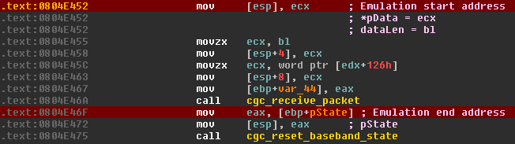
模拟的代码的起始和结束地址红色标出：
Emulation start address 中 将参数（在ecx中）存到了栈顶
Emulation end address 中 将结果
movzx：无符号扩展（16bit->32bit）
上下文在调用cgc_receive_packet()之前被转储。输入参数（\pData 和 dataLen）位于寄存器中，在这里很容易更改，而不是在堆栈中。*
脚本完成后，它会在与 IDA 数据库 (.idb) 相同的文件夹中生成一个“Unicorn Context”目录。这个目录包含两个东西：
- _index.json：一个 JSON 格式的文件，包含有关进程中所有内存段的元数据、寄存器状态和体系结构信息
- 许多 gzip 压缩的二进制文件包含进程中每个单独内存段的内容
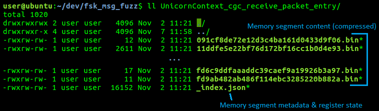
由 Unicorn Context Dumper 工具之一创建的典型“Unicorn Context” 的 _index.json中的内容
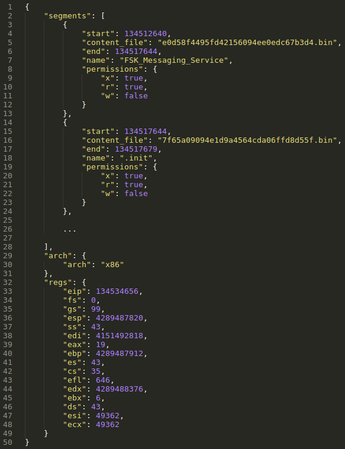
_index.json 文件包含所有内存段、寄存器上下文和架构信息的元数据
创建一个可模糊的独角兽测试框架
现在我们有了一个开始仿真的起始上下文，我们编写了一个 Unicorn 脚本来加载上下文（映射所有内存区域，将内容加载到它们中，并设置寄存器内容），hook任何会破坏仿真或会阻碍模糊测试的东西（malloc () , free() , checksum 验证等), 将一个新的数据包嵌入到适当的地方，并从头到尾模拟代码。我已经创建了一个基本模板作为示例测试工具。
快进一点，下面显示的是完整的 Unicorn 脚本，它可以模拟 FSK_Message_Service 应用程序的应用层数据包解析，从从 Unicorn 上下文转储程序生成的上下文目录加载的初始状态开始。此脚本在很大程度上依赖于从afl-unicorn 提供的unicorn_loader.py模块导入的功能。我们将在下面讨论一些更有趣的部分，但在大多数情况下，这遵循我之前的博客文章中讨论的基本步骤。
该脚本中有几个独特的部分，使模拟和模糊测试成为可能。下面详细描述了每一个：
从转储上下文实例化独角兽引擎实例： unicorn_loader.py模块提供了一个新的AflUnicornEngine类，它派生自普通的UnicornEngine。构造函数有 3 个参数：上下文目录的路径，一个在 STDOUT 上启用跟踪输出的标志，以及一个在将上下文加载到 STDOUT 时启用调试输出的标志。

从上下文目录实例化后，AflUnicornEngine 已映射所有进程内存，初始化寄存器值，并准备好从指令指针进行仿真
AflUnicornEngine类还提供了一些可用于模糊测试工具的附加 API ：
- dump_regs()：将当前寄存器内容转储到 STDOUT
- force_crash(e)：通过发出信号（SIGILL、SIGSEGV、SIGABRT 等）强制测试工具崩溃。这让 AFL 检测到发生了崩溃并正确记录。如果发生崩溃情况（例如emu_start()抛出异常），您必须调用它！
因为此类派生自UnicornEngine基类，您仍然可以使用所有常规调用，例如emu_start()、reg_read()和mem_write()。要查看AflUnicornEngine类上可用的所有 API，请通读 unicorn_loader 模块的源代码。
hook所有堆分配 ( \malloc()* )：*在仿真期间调用malloc()可能会导致各种问题。分配器可能需要向内核请求更多内存，但在仿真期间我们没有内核这样的东西……所以这会导致崩溃。为了防止这种情况，Unicorn 脚本hook对malloc()的任何调用，转而调用unicorn_loader.py模块中随 afl-unicorn 一起提供的基于 Unicorn 的实现。
下面的代码片段显示了用于为 FSK_Messaging_Service 二进制文件执行此操作的代码，这是一个 32 位 Linux 二进制文件。
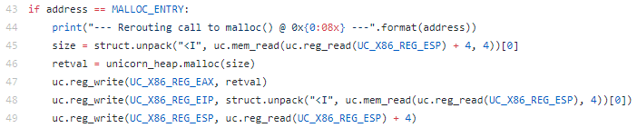
对 malloc() 的调用被重定向到我们自己内部的、页面保护的、基于 Unicorn 的实现。在第 45 行中，从堆栈中检索字节数。第 46 行调用内部的、基于 Unicorn 的实现。第 47 行将返回值（分配的缓冲区的地址）放入 EAX，第 48 和 49 行通过将 EIP 设置为返回地址然后将返回地址弹出堆栈来手动执行“返回”。所有这些都符合典型的x86 调用约定。在将此方法应用于您自己的二进制文件时，请确保您遵循给定操作系统和体系结构的调用约定！
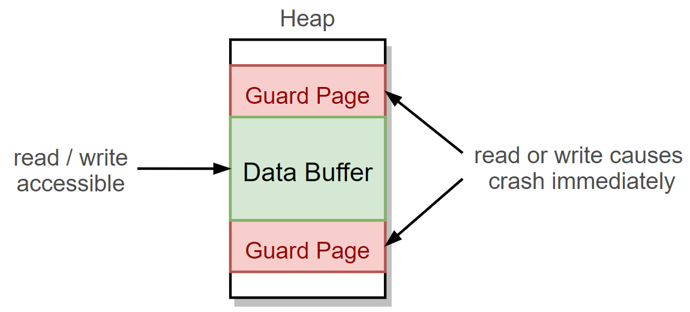
由基于 Unicorn 的堆实现分配的所有缓冲区都自动被保护页面包围，这将强制在任何下溢/溢出时产生崩溃。
自己处理内存分配的另一个主要好处是我们可以实现自己的基本保护页。基本上，所有分配的缓冲区都被没有读或写权限的“保护页”包围。返回缓冲区边界之外的任何访问（也称为堆溢出或下溢）将立即崩溃并导致内存访问冲突。
请注意，unicorn_loader.py模块中的**UnicornSimpleHeap类也提供free()、calloc()和realloc()功能，但为简单起见，我在本示例中选择仅hook操作malloc() 。为了模拟更大、运行时间更长和更复杂的代码，您可能希望或需要hook所有与堆相关的函数。
跳过不必要的、难以模拟的功能：还有许多其他事情显然会导致问题。例如， Printf()肯定会调用内核，以便将要打印的文本发送到图形设备进行渲染。您需要分析您尝试模拟的代码，并努力识别您认为可能会破坏模拟的任何内容。在这个例子中，我已经确定free()、 printf()和cgc_transmit()会由于各种原因导致仿真失败，而且我也可以跳过它们而不会对模糊测试结果造成任何重大影响。通过强制立即返回来跳过所有这些功能。这是以与最后一部分相同的方式完成的上面描述的malloc()*钩子：手动将 EIP 设置为存储在堆栈中的返回地址，然后通过向 ESP 添加 4 将返回地址弹出堆栈。请记住，这个确切的过程特定于 x86，因此请根据您的目标体系结构进行必要的调整。
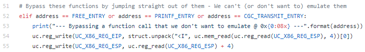
调用时会立即返回有问题的函数。确保这样做不会产生意想不到的后果！
绕过校验和验证：\每个接收到的数据包都附带一个 16 位 CRC，必须在验证数据包之前对其进行验证（请参阅本文前面源代码片段的第 27-31 行）。仅此一项就对传统模糊测试提出了重大挑战，因为任何盲目修改数据包的尝试都会导致 CRC 检查失败并且几乎没有代码覆盖。这种类型的问题是众所周知的，但传统上它需要对目标二进制文件进行修补或开发才能为每个输入正确生成有效的校验和。
Afl-unicorn 使得绕过这个相当微不足道。对于这个例子，校验和验证在 IDA 中很容易识别：
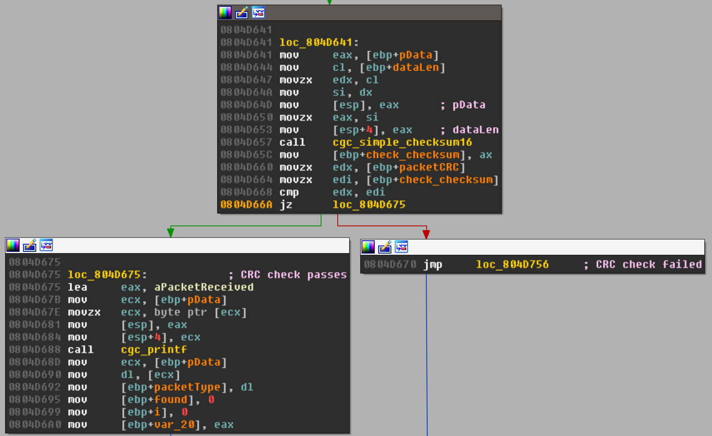
我们想确保在仿真模糊测试时我们总是沿着左边的路径走
我们只需hook对cgc_simple_checksum16()的调用，并且只要执行到那里，EIP 就会手动设置为“CRC 校验通过”路径：
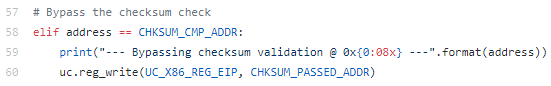
使用 Unicorn 绕过 CRC 检查非常简单
这并不妨碍我们以后必须弄清楚如何计算 CRC 以开发一个完整的有效漏洞利用程序，但它让我们将这项工作推到线下，而不是首先专注于寻找漏洞。
在加载变异输入之前模拟一条指令：\这是最奇怪的部分，它实际上只是我如何将 AFL 检测到 Unicorn 中的一个产物，因为我还没有想出解决真正内部问题的方法：为了确保AFL 的 forkserver 在正确的时间启动，您必须在从磁盘加载变异输入之前至少模拟 1 条指令。如果不这样做，那么 AFL 创建的每个分支都将使用相同的输入执行。在示例脚本中，这是在第 82 行和第 87 行之间完成的：
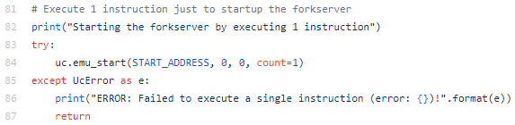
是的，这是一个 hack……暂时接受它，希望它能在不久的将来得到修复
所以基本上，在加载变异输入之前，您只需要在测试工具中的某个地方使用此代码块。不过，有一个细微差别：您需要问问自己，重新执行第一条指令是否会产生任何负面后果。在此示例中，执行的第一条指令是无害的“mov [esp],ecx”，因此重新执行它不会产生任何负面影响。如果您不想或无力重新执行第一条指令，只需在第二次开始仿真时适当调整起始地址 ( uc.emu_start() )。
使用 afl-unicorn 对模拟二进制文件进行模糊测试
Unicorn harness 完成后，剩下要做的唯一一件事就是在 afl-unicorn 下运行它，并希望它能发现一些崩溃。有关如何运行 afl-unicorn 的详细信息，请务必阅读我之前的博客文章，但对于这个特定实例，我们只运行典型的 afl-unicorn 命令行：
1 | afl-fuzz -U -m none -i /path/to/inputs/ -o /path/to/results/ -- python fsk_message_service_test_harness.py /path/to/context_dir/ @@ |
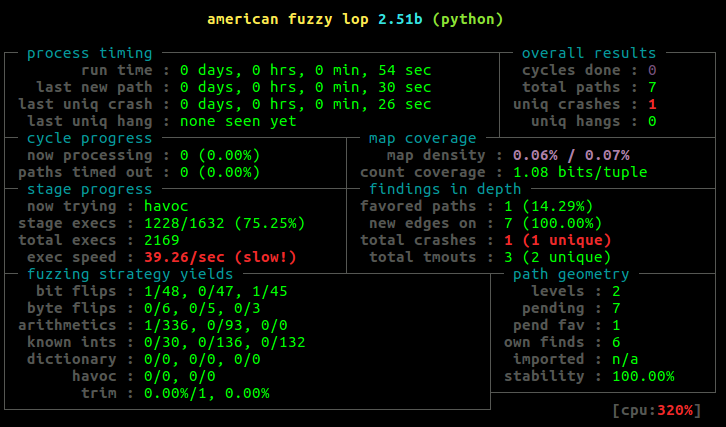
只需几秒钟即可发现崩溃！
果然，它在挑战的README中描述的cgc_packet_receive()函数中发现了漏洞：
在接收到超过 64 字节最大数据包大小的数据包时，将对新分配的数据包结构的 memcpy 进行不正确的长度检查。这允许在堆上发生内存覆盖。这个数据结构有一个指向可以被覆盖的数据包处理程序的函数指针，一旦服务执行这个函数指针，就有机会通过覆盖这个函数指针来执行控制流。
从转储崩溃的输入文件可以明显看出，对于tSinglePacketData结构中分配的**packetData缓冲区来说，数据包太大（>48 字节）：
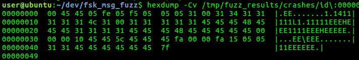
崩溃数据包大于 48 字节（数据包数据在解析期间复制到的缓冲区的大小）
然后我们可以通过运行带有崩溃输入的 Unicorn 脚本来验证这一点：
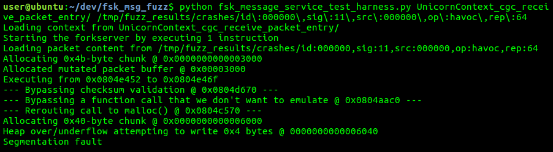
通过 Unicorn 脚本运行崩溃输入来验证它并更彻底地调试它
下一步将是弄清楚如何将这个崩溃输入发送到实际（非模拟）应用程序中，并证明它是一个真实的工作崩溃，并且它不是由模拟错误引起的。
调试基于仿真的模糊测试问题
我遇到的一些常见问题包括：
- 未发现任何路径：确保在加载变异输入之前至少模拟一条指令。如果不这样做，每个fork都会获得相同的未更改输入。在 afl-unicorn 之外独立运行您的测试工具，并确保它从开始到结束地址运行没有任何问题。如果这不能解决问题，请确保已将变异的输入写入模拟内存并正确注册上下文。
- 发现太多崩溃：要么是您偶然发现了一些真正有问题的代码（大奖！），要么存在仿真问题。跟踪仿真调试跟踪输出并查找破坏仿真的因素，例如基于段寄存器的取消引用、对内核的系统调用或动态模块加载。
如果事情看起来不错（相当规律地发现新路径），那么其他一切都遵循典型的 AFL 使用模式。确保您的示例输入能够很好地覆盖目标代码并模糊测试您的核心内容。
我们在哪里，我们要去哪里
在这篇文章中，我演示了一个示例，说明我们如何使用 afl-unicorn 对现实世界应用程序中难以访问的接口进行模糊测试。我们发现这种方法在 Windows、Linux、Android 和 iOS 应用程序上非常有效，我认为它可以轻松移植到嵌入式系统。
未完成的任务主要是继续使用使这种方法可用的脚本，并将它们扩展到其他操作系统和体系结构。例如，模拟 Windows 应用程序会引入一长串问题，因为对 PEB 和 TIB 的引用会由于对 GS 段寄存器的引用而导致错误的崩溃。可以创建特定于操作系统的实用程序（以类似于unicorn_loader.py模块中已有的 UnicornSimpleHeap 类的方式）以使用最少的工具处理这些已知情况。这与usercorn项目采用的路线非常相似。此外，ripr这个项目非常有趣，我相信他们的代码生成方法很有可能可以被改编或扩展以生成一个模板测试工具，这将很容易使模糊化。
在未来的博客文章中，我计划针对从嵌入式系统检索的平面运行时内存映像使用 afl-unicorn 进行演示。该用例是创建 afl-unicorn 的最初灵感，我仍然相信它是理想的环境，因为它避免了在尝试模拟在更复杂的多线程操作系统中运行的用户态应用程序时引入的大部分问题。
Credit
我与俄亥俄州哥伦布市Battelle的Parker Wiksell合作开发了 afl-unicorn 和此处描述的方法作为内部研究项目。Battelle 是一个很棒的工作场所，而 afl-unicorn 只是在那里进行的新颖网络安全研究的众多例子之一。有关 Battelle 赞助的更多项目，请查看Chris Domas和John Toterhi（又名cetfor）之前的工作。有关 Battelle 的职业信息，请查看他们的职业页面。
当然，如果没有AFL和Unicorn Engine ，这一切都不可能实现。许多额外的灵感来自 Alex Hude 用于 IDA 的超赞uEmu插件，许多一般概念是从 NCC Group 的AFLTriforce项目中借用的。从usercorn项目中获得了一些额外的灵感，因为它证明了 Unicorn 可以成功地运行用户空间应用程序。
Unicorn引擎
Unicorn 是一个轻量级, 多平台, 多架构的 CPU 模拟器框架. 我们可以更好地关注 CPU 操作, 忽略机器设备的差异. 想象一下, 我们可以将其应用于这些情景: 比如我们单纯只是需要模拟代码的执行而非需要一个真的 CPU 去完成那些操作, 又或者想要更安全地分析恶意代码, 检测病毒特征, 或者想要在逆向过程中验证某些代码的含义. 使用 CPU 模拟器可以很好地帮助我们提供便捷.
它的亮点 (这也归功于 Unicorn 是基于 qemu 而开发的) 包括:
支持多种架构: Arm, Arm64 (Armv8), M68K, Mips, Sparc, & X86 (include X86_64).
对 Windows 和 nix 系统 (已确认包含 Mac OSX, Linux, BSD & Solaris) 的原生支持
具有平台独立且简洁易于使用的 API
使用 JIT 编译技术, 性能表现优异
那么它应用的场景有哪些呢？
• 你可以调用恶意软件中一些有趣的函数, 而不用创建一个有害的进程.
• 用于 CTF 竞赛
• 用于模糊测试
• 用于 gdb 插件, 基于代码模拟执行的插件
• 模拟执行一些混淆代码
这款神器是在2015年BlackHat大会上发布的，作者的ppt可以在这儿下载到
http://www.unicorn-engine.org/BHUSA2015-unicorn.pdf
Python使用Unicorn的API简易教程
在 Python 中，模拟 X86 的 32 位代码：
1 | #!/usr/bin/python |
这个例子中运行了X86_CODE32字符串的机器代码，即 INC ecx; DEC edx，运行结束后，打印UC_X86_REG_ECX，UC_X86_REG_EDX中的内容，发现它们都加一了。
如下使用Python 运行它。
1 | python test1.py |
Python 示例很直观，但为了以防万一，读者可以在下面找到test1.py每一行的解释。
- 第2~3行：使用Unicorn前导入unicorn模块。此示例还使用了一些 X86 寄存器常量，因此还需要unicorn.x86_const 。
- 第 6 行：我们要模拟的原始二进制代码。此示例中的代码采用十六进制模式，代表两条 X86 指令“ INC ecx ”和“ DEC edx ”。
- 第 9 行：我们将在其中模拟上面的代码的虚拟地址。
- 第 14 行：使用Uc类初始化 Unicorn 。这个类接受 2 个参数：硬件架构和硬件模式。在此示例中，我们要为 X86 体系结构模拟 32 位代码。作为回报，我们在mu中有一个此类的变量。
- 第 17 行：在第9行中声明的地址处使用mem_map方法为此仿真映射 2MB 内存。在此过程中所有的 CPU 操作都应该只访问这块内存。此内存映射有默认权限 READ、WRITE 和 EXECUTE。
- 第20行：将要模拟的代码写入到我们上面刚刚映射的内存中。mem_write方法有两个参数：要写入的地址和要写入内存的代码。
- 第 23 ~ 24 行：使用方法reg_write设置*ECX和EDX*寄存器的值。
- 第 27 行：使用方法emu_start启动仿真。该 API 有 4 个参数：模拟代码的地址、模拟停止的地址（紧接在X86_CODE32的最后一个字节之后）、要模拟的时间和要模拟的指令数。如果我们像本例一样忽略最后两个参数，Unicorn 将在无限时间和无限数量的指令中模拟代码。
- 第 32 ~ 35 行：打印出寄存器ECX和EDX的值。我们使用函数reg_read读取寄存器的值。
Unicorn 的python示例代码在 unicorn/bindings/python 文件夹
下面是 sample_arm64.py
1 | #!/usr/bin/env python |
Unicorn 的中文C语言API介绍在此处：
https://github.com/kabeor/Unicorn-Engine-Documentation/releases
=========================
Unicorn-based binary-only instrumentation for afl-fuzz
(See ../docs/README for the general AFL instruction manual.)
1) Introduction
The code in this directory allows you to build a standalone feature that
leverages the Unicorn Engine and allows callers to obtain instrumentation
output for black-box, closed-source binary code snippets. This mechanism
can be then used by afl-fuzz to stress-test targets that couldn’t be built
with afl-gcc or used in QEMU mode, or with other extensions such as
TriforceAFL.There is a significant performance penalty compared to native AFL,
but at least we’re able to use AFL on these binaries, right?The idea and much of the implementation comes from Nathan Voss njvoss299@gmail.com.
2) How to use
Building AFL’s Unicorn Mode
First, build afl as usual. This is pretty simple:
$ cd
$ makeOnce that completes successfully you need to build and add in the Unicorn Mode
features:$ cd unicorn_mode
$ ./build_unicorn_support.shNOTE: This script downloads the most recent Unicorn Engine stable release
from the Unicorn github page. If you are offline, you’ll need to hack up
this script a little bit and supply your own copy of Unicorn’s latest stable
release. It’s not very hard, just check out the beginning of the
build_unicorn_support.sh script and adjust as necessary.Building Unicorn will take a little bit (~5-10 minutes). Once it completes
it automatically compiles a sample application and verify that it works.Fuzzing with Unicorn Mode
To really use unicorn-mode effectively you need to prepare the following:
* Relevant binary code to be fuzzed * Knowledge of the memory map and good starting state * Folder containing sample inputs to start fuzzing with - Same ideas as any other AFL inputs - Quality/speed of results will depend greatly on quality of starting samples - See AFL's guidance on how to create a sample corpus * Unicorn-based test harness which: - Adds memory map regions - Loads binary code into memory - Emulates at least one instruction* - Yeah, this is lame. See 'Gotchas' section below for more info - Loads and verifies data to fuzz from a command-line specified file - AFL will provide mutated inputs by changing the file passed to the test harness - Presumably the data to be fuzzed is at a fixed buffer address - If input constraints (size, invalid bytes, etc.) are known they should be checked after the file is loaded. If a constraint fails, just exit the test harness. AFL will treat the input as 'uninteresting' and move on. - Sets up registers and memory state for beginning of test - Emulates the interested code from beginning to end - If a crash is detected, the test harness must 'crash' by throwing a signal (SIGSEGV, SIGKILL, SIGABORT, etc.)Once you have all those things ready to go you just need to run afl-fuzz in
‘unicorn-mode’ by passing in the ‘-U’ flag:$ afl-fuzz -U -m none -i /path/to/inputs -o /path/to/results -- ./test_harness @@The normal afl-fuzz command line format applies to everything here. Refer to
AFL’s main documentation for more info about how to use afl-fuzz effectively.For a much clearer vision of what all of this looks like, please refer to the
sample provided in the ‘unicorn_mode/samples’ directory. There is also a blog
post that goes over the basics at:https://medium.com/@njvoss299/afl-unicorn-fuzzing-arbitrary-binary-code-563ca28936bf
The ‘helper_scripts’ directory also contains several helper scripts that allow you
to dump context from a running process, load it, and hook heap allocations. For details
on how to use this check out the follow-up blog post to the one linked above.3) Gotchas, feedback, bugs
To make sure that AFL’s fork server starts up correctly the Unicorn test
harness script must emulate at least one instruction before loading the
data that will be fuzzed from the input file. It doesn’t matter what the
instruction is, nor if it is valid. This is an artifact of how the fork-server
is started and could likely be fixed with some clever re-arranging of the
patches applied to Unicorn.Running the build script builds Unicorn and its python bindings and installs
them on your system. This installation will supersede any existing Unicorn
installation with the patched afl-unicorn version.Refer to the unicorn_mode/samples/arm_example/arm_tester.c for an example
of how to do this properly! If you don’t get this right, AFL will not
load any mutated inputs and your fuzzing will be useless!